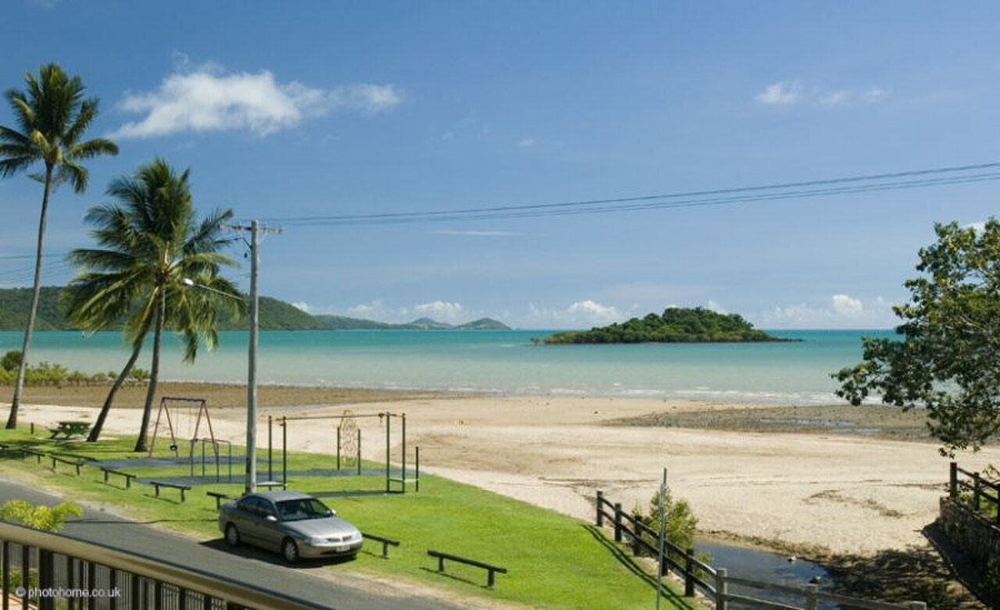
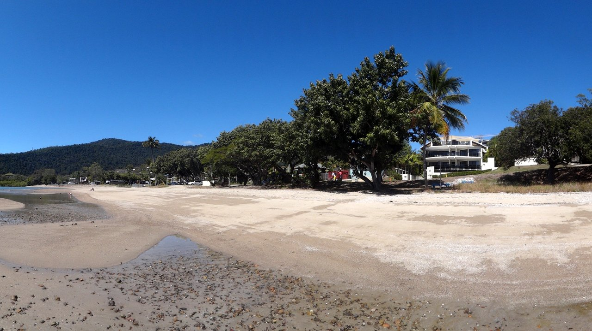

1 · 4 min · 2.2 km from the lagoon
NRMA Airlie Beach Holiday Park
234 Shute Harbour Road, Cannonvale QLD 4802 · Formerly Seabreeze Tourist Park
The closest park to the lagoon by car, on the Cannonvale side of Shute Harbour Road beside the shopping strip. Coles is next door. The foreshore walk into Airlie takes about 40 minutes, so most people drive or catch the bus for the reef boats. On site: two pools, a café and bar, camp kitchen, laundry and a dump point.
- 4.2 · 1,235
- Tripadvisor
- 4.1 · 727
- Pets
- Yes, on sites year-round
- Pool
- Two pools
- Sites
- Powered and unpowered sites, plus cabins
- Beach
- Cannonvale Beach, about a 5-minute walk
Before you book. Some recent guests still call the amenities dated, and the road out front is busy. A 2026 review noted EV charging on site — confirm a bay when you book.